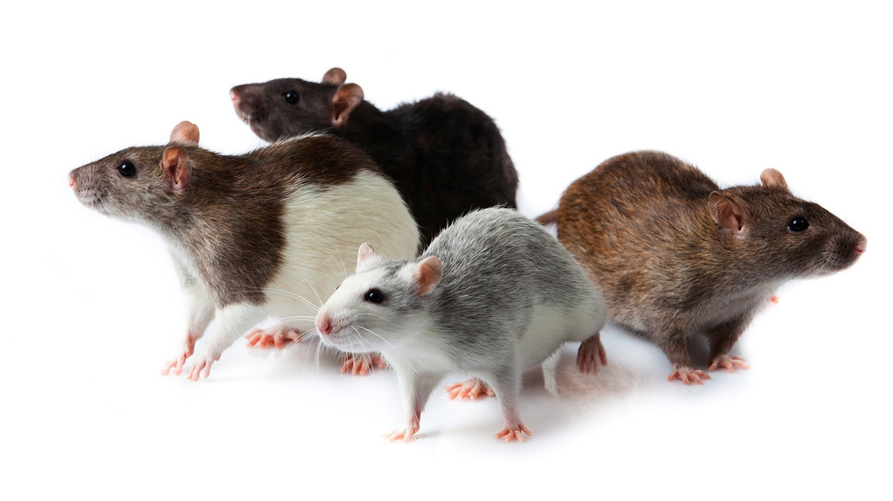
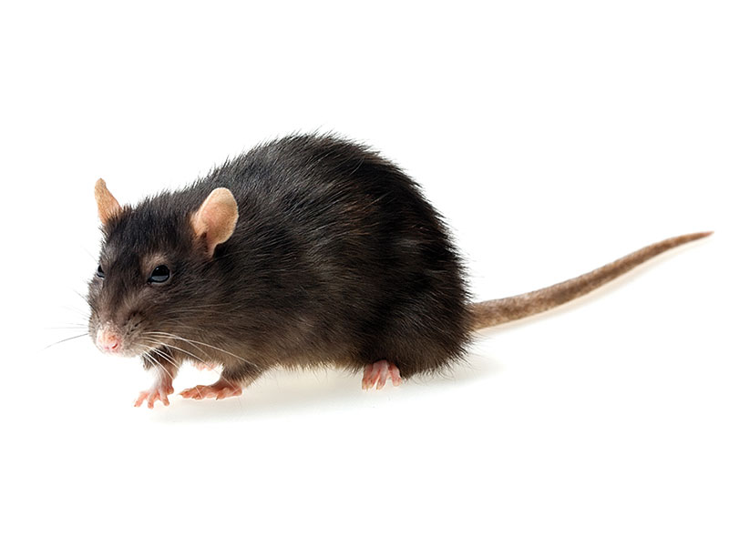

Одним из самых умных и ласковых домашних животных считается декоративная крыса. Содержание крысы в домашних условиях не требует особого специфического ухода или дорогого корма. Домашние крыски отлично поддаются дрессировке, ждут и весело встречают владельца, как жизнерадостные маленькие щенки, играют и ластятся к рукам хозяина, как нежные кошки, обожают и доверяют человеку, как самые верные псы.
Смышленые грызуны выделяют любимчиков среди членов семьи, забавно строят смешные рожицы и шевелят маленькими ушками, некоторые особи даже смеются при щекотке. В их маленьких сердцах живет огромная трепетная любовь к своим хозяевам, перед эмоциональным проявлением которой не могут устоять даже самые несентиментальные люди.
Декоративная крыса в качестве домашнего питомца – идеальный вариант. Большинство людей, брезгливо относящихся к диким крысам, при знакомстве с милым ручным грызуном меняют свое отношение к умному зверьку, а трюки, которые легко осваивает пушистый грызун, вызывают удивление  и восторг у детей и взрослых.
Ухаживать за крысой в домашних условиях достаточно просто, животное надо обеспечить комфортной клеткой с наполнителем, водой и простым кормом. Все, кто думает о домашних крысах, как о грязных заразных грызунах, ошибаются в своем мнении. Декоративные крысы – очень чистоплотные домашние животные, в квартире, где содержится пушистый питомец при своевременной уборке его жилища, отсутствует запах. Даже в своей клетке грызун выделяет один угол для справления нужды, если туда попадает миска с едой – крыска перед питанием обязательно зубами перетаскивает ее в чистое место.
Но самым главным достоинством этого пушистого грызуна является его высокая потребность в общении. Каждая декоративная крыска – отдельная личность со своим характером и привычками, животное быстро запоминает голос и запахи человека, откликается на кличку, при несложной дрессировке приносит небольшие предметы.
Забавный жизнерадостный крысенок готов часами напролет играть с детьми и взрослыми, что вызывает веселье и смех у всех членов семьи, а особи в возрасте любят растянуться возле ласковых человеческих рук, закрывая глаза от удовольствия и забавно попискивать при поглаживании спинки, ушей и брюшка. Умный грызун тонко чувствует состояние человека и способен снимать стресс у любимого хозяина. Содержание крыс в домашних условиях дарит их владельцам трогательные минуты доверительной ласки и бескорыстной любви этих маленьких преданных друзей.
Средний срок жизни пушистых грызунов около двух лет, но при надлежащем уходе и содержании домашние крысы живут до 4 лет. Самостоятельно ухаживать за крысами может даже школьник младшего возраста, для которого умный грызун обязательно станет самым лучшим другом.
В дикой природе крысы ведут активный ночной образ жизни, отсыпаясь в дневное время перед очередной охотой. В домашних условиях смышленые грызуны нередко подстраиваются под режим жизни хозяев и начинают больше бодрствовать и играть в дневное время.
Содержать дома ручных грызунов можно в одиночку, стайками или парочками. При любом виде содержания необходимо помнить, что крысы – социальные животные и не меньше человека нуждаются в постоянном общении. Неопытному крысоводу нежелательно заводить сразу несколько особей, уход за крысами при многочисленной стае включает в себя не только кормление и уборку клетки, но и периодическое отсаживание дерущихся особей, лечение травм и болезней у большого числа животных.
Все, что нужно для крысы – это просторная клетка с аксессуарами, вкусный питательный корм и любящий хозяин. Клетка для пушистого питомца становится родным домом, в котором он проводит большую часть своей жизни, поэтому к покупке жилья для маленького друга нужно отнестись с повышенным вниманием. Клетка для декоративной крысы должна соответствовать следующим параметрам.
Ручного грызуна нельзя содержать в узкой низкой клетке, животному необходим простор для необходимого перемещения внутри жилища. Желательно для содержания одного или двух питомцев приобретать проволочную клетку с размерами: 60х40х60 см, то есть 60 см в длину и высоту и 40 см в ширину. При таком объеме животное может свободно играть внизу или лазать по прутьям в высоту.
Жилище домашней крысы должно быть комфортным и уютным для пушистого питомца и содержать необходимые аксессуары для кормления, поглощения запаха, игр и отдыха животных.
Грызуны любят отдыхать и прятаться в собственном домике, на дно которого можно постелить мягкие тряпочки. Пластиковый прочный дом можно установить внизу клетки или подвесить.
Излюбленным местом для отдыха и сна является мягкий гамак, который подвешивается к потолку клетки или между этажами. Питомцу абсолютно неважно куплен этот аксессуар в магазине или изготовлен самостоятельно из теплых уютных тканей. Необходимо периодически менять и стирать гамаки.
Если размеры клетки позволяют, можно подвесить канаты, лестницы, тоннели, мостики, игрушки, съедобные аксессуары.
Пушистые грызуны довольно неприхотливы в еде, хотя у каждой особи свои вкусы и любимые лакомства. Кормить питомца необходимо правильно с самого нежного возраста во избежание развития патологий пищеварительной системы и ожирения.